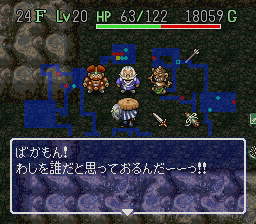
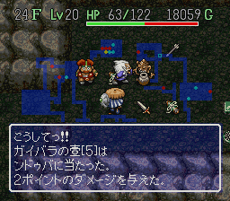
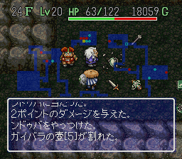

风来的西林SFC ～秘密写真馆～
◆ 挂轴洞窟的血战！ガイバラVSンドゥバ！！！◆
����出现条件：
挂轴洞窟22F以上，若ガイバラ出现地点在商店内，并且使用あかりの卷物看到ンドゥバ的形态之后，便有50%几率发生以下隐藏事件。
|

店主「欢迎光临任天堂肯德鸡店，本店有白切鸡、盐�h鸡、烧鸡、蒜蓉鸡、叫化鸡和咖哩鸡等等，不知阁下想吃哪一种鸡呢？」
西林「俺想吃油细鸡，有吗？」
店主「这位客官，本店的大厨ナオキ先生已经成功潜入油细鸡总部做卧底，相信不久就能搞到制作秘方了，到时请一定捧场哦！」
ガイバラ「哎，这位客官不如看看本店的壶吧，米壶、水壶、茶壶、尿壶应有尽有，肯定有一款合你意。Look！这是本店的镇店之宝――碧玉玲珑紫砂壶，这壶可不简单呐，是风来祖师kenyo的御用茶壶，这壶沏出的茶味道格外清香，令人回味无穷，如果使用本店独家秘制的极品铁观音……呵呵，沏出的茶绝对香飘方圆十里，饮后让人有一种置身大自然的感觉，而且浑身有一种说不出的舒畅，更绝的是还可以增强2成功力，长期饮用还可以青春永驻，延年益寿呢……这么珍贵的壶你不买就亏了，这样吧，买碧玉玲珑紫砂壶送500g极品铁观音，客官意下如何呢？」
西林「これ……いくらですか？」
ガイバラ「不贵不贵，心动价＄999999，看你这么靓仔我才卖这个价的，昨天有位叫icemoon的风来人出＄9999999的价钱我还不卖呢，你可不要辜负了我的一番好意啊。」
西林「え――と，能给点时间让我跟GF商量一下吗？」
ガイバラ「你什么时候想通了就什么时候来找我，不过要快点哦，你知道这么珍贵的东西是很抢手的，过了这个村就没了这个店了……」
|

ンドゥバ「说得一点不错，很快你这个店就没了，根据线人通报，ガイバラ你卖的壶质量很有问题哦，我们任天堂西林电视台特意来做个实地专访，你对这件事有何解释呢？」
ガイバラ「哈？哪个二五仔说的？本店的壶的质量经过ISO9002的国际质量认证，顾客绝对可以放心，而且价廉物美，童叟无欺！请问到哪里找像我这么好的店？」
ンドゥバ「你不仅仅在制作壶的时候偷工减料，还将这些劣质壶冠以史上最高杰作之名来高价出售骗取大量不义之财，已严重触犯了风来界的法律，你等着坐牢吧！」
ガイバラ「你这是诽谤还是恐吓？饭可以乱吃，话可不能乱说啊大哥！再跟你说下去简直是侮辱我的智慧，小子吃我一壶！」（ガイバラ扔出ガイバラの壶）
|

ンドゥバ「你想杀人灭口？走路啦……」
ガイバラ「站住，哪里逃！试试我的新必杀壶――幻魔之壶」
ンドゥバ「啊――――（惨叫声）！」
ガイバラ「哇哈哈哈，你太嫩了，这种水平怎么跟我斗啊？」
西林（摸出新买的Nokia7650）「喂喂，警察局吗？挂轴洞窟24F发生了一起杀人事件……」 |
 ［返回写真馆］ ［返回写真馆］
|
|